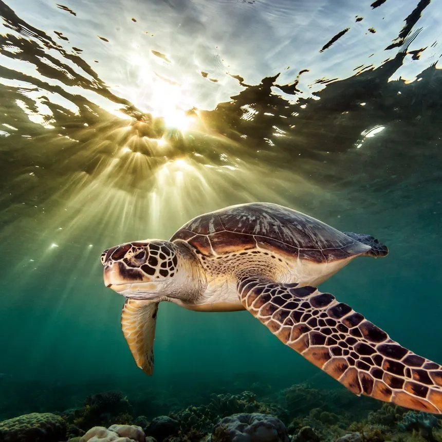

The Empire Removes Algae (T.E.R.A.)

How has ROVs Help Turtles?
-Swipe to learn more!
Tracking Loggerhead Turtles with ROVs
What’s it about? Scientists used a robot submarine to follow loggerhead turtles!

What it observed:
- Watched 70 turtles for 44.7 hours
- Saw them eat in cold water (44.8°F)
- Made fishing safer for turtles
Back to Home
Loggerhead Results
What we found: 63% of dives were for food!
Big Win: 40% fewer turtles caught in nets by 2018!
Back to Home
Cleaning Turtle Homes with a Robot
What’s it about? A robot boat cleans trash so turtles don’t eat it!

How it helped:
- Removed 30 million pounds of trash
- Kept junk away from turtle homes
- Cleaned rivers like Rio Ozama (100 tons in 1 month)
Back to Home
Cleanup Results
What we found: Interceptor Trash Collection by Location (March 2025)
Big Win: Could save 1,500 turtles a year!
Back to Home
Saving Turtles from the Cold with ROVs
What’s it about? Robots checked turtles in icy water!

How it helped:
- Saw turtles in cold water (7.1°C)
- 15% moved slow from the cold
- Helped rescuers find them
Back to Home
Cold Rescue Results
What we found: Turtles get sleepy below 10°C!
Big Win: Saved 4,900 turtles in Texas in 2021!
Back to Home
How Have ROVs Helped Turtles?
Our Big Question: Robots make turtle lives better!
- Tracking: Kept turtles safe from nets
- Cleaning: Took trash away
- Rescuing: Saved turtles from cold
Robots are turtle heroes!
Back to Home